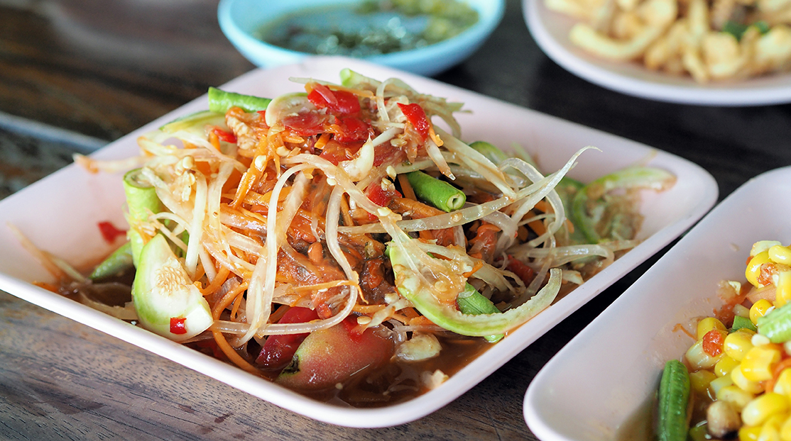
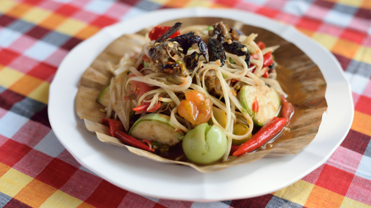
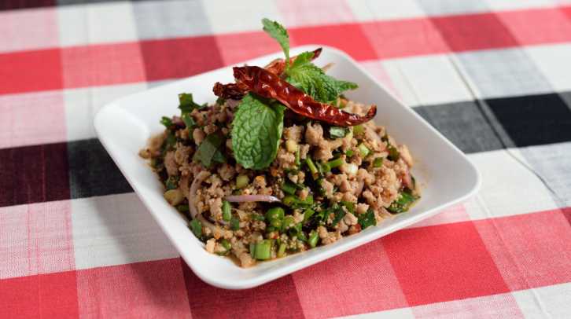
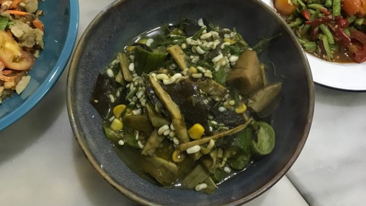

1. Somtum

Also known as Thai papaya salad, there are many versions of this iconic dish, but the heart of this dish lies in the fresh, crisp green papaya slices that are mixed with the likes of local tomatoes, chilli, garlic and fish sauce.
2. Larb

Another typical Isan dish, larb is made with minced meat, usually pork, duck, beef or chicken mixed with ground toasted rice, shallots, spring onions, mint leaves and seasoned with chilli, lime juice and either fish sauce or pla ra.
3. Koi

Basically raw meat salad, minced or cut into small pieces. It is typically made with red meat such as beef, water buffalo, venison, fish, shrimp and ant larvae, with similar ingredients as larb.
4. Om

Isaan curry with several options of meat like chicken, frog, pork, catfish and pond snail. The base chilli paste is made with shallots, lemongrass and chilli, and local herbs like culantro and lemon basil.
5. Bamboo Shoot soup with yanang leaves

Simply made from freshly-pounded paste. Fresh bamboo shoots—the main component of the dish—need to be boiled beforehand to reduce its bitterness, while the dark green broth comes from yanang leaves.